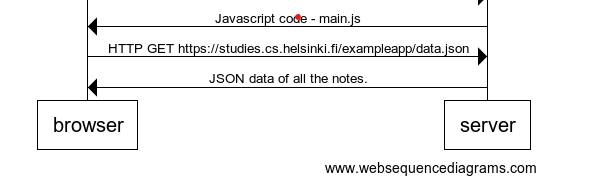

The browser then starts executing the javascript code in main.js. The code requests for data from the server.

When a new not is created, the browser sends only one POST request to the server.
The server responds with the a status code 201 created.
The server does not ask for a redirect.
The browser stays on the same page and does not send other HTTP requests.